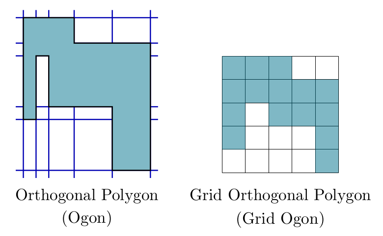

We developed a C++ library for creating orthogonal polygons (ogons, for short) with a given number of vertices, and some subclasses (row-convex, column-convex, convex, path and spiral ogons).
The algorithms are based on the Inflate-Paste method, introduced by A. P. Tomás and A. L. Bajuelos in [2]. This method generates grid orthogonal polygons (grid ogons, for short), which are orthogonal polygons without collinear edges, defined in a unit square lattice and that have exactly one edge on all the grid lines that intersect their minimum bounding square.
The Inflate-Paste method works iteratively. To generate an n-vertex grid ogon, it starts from a unit square and performs (n-4)/2 iterations. In each iteration, it applies two transformations (called Inflate and Paste) to glue a new rectangle to the previous grid ogon, yielding a new grid ogon with one more reflex vertex. Our C++ implementation runs in O(n^2) time and uses O(n) space.
In addition, we designed tailored versions of the Inflate-Paste algorithm to create polygons in the the aforementioned subclasses. For the row-convex, column-convex and convex grid ogons, these algorithms run in O(n) time.
Ogons are obtained from grid ogons by sliding their edges, in such a way that the order defined by a planar sweep is kept. The sliding procedure is applied k times (k is a user-defined parameter), runs in O(n*k) time and uses O(n) space. The generator may create polygons with collinear edges. For that purpose, it performs a final transformation making use of another parameter that defines the probability of moving an edge to the same line of the previous one (if that is possible). This transformation runs in O(n^2) time.
The library is a fanmade package for CGAL. We use CGAL::Arrangement_2, from package 2D Arrangements, to have a DCEL as a possible representation for the generated orthogonal polygon. It is also possible to have as output a doubly linked list of vertices of type CGAL::Point_2, in counterclockwise (CCW) order. The coordinates of the vertices are non-negative integers.
| Download library |
| [1] Ferreira, C. L., "Algorithms for Chromatic Art Gallery Problems with Vertex α-Guards", MSc Thesis in Computer Science, Faculty of Sciences, University of Porto, 2016. | |
| [2] Tomás A. P. and Bajuelos A. L., "Quadratic-Time Linear-Space Algorithms for Generating Orthogonal Polygons with a Given Number of Vertices". In: Laganá A. et al (Eds), ICCSA 2004. LNCS, vol. 3045, pp. 117-126, Springer. [DOI, PDF]. For an implementation of the Inflate-Cut method refer to this web page. |